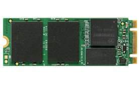

The 970 Evo Plus offers excellent sustained write performance both in
and out of cache. This results in consistent performance even when the
drive is nearly full. Samsung also have a great track record for reliability,
this drive will likely last a lifetime. The larger capacity drives (1TB+) offer
even better write performance and may be more appropriate for some
users. We use this drive (and its larger siblings) extensively in our EFps
Lab at UserBenchmark.